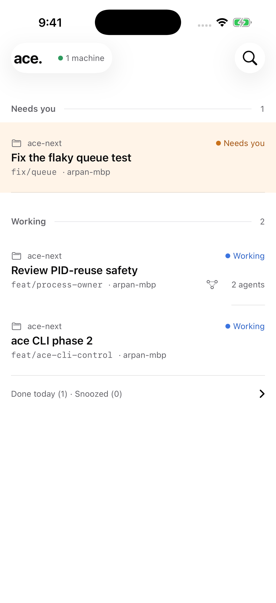
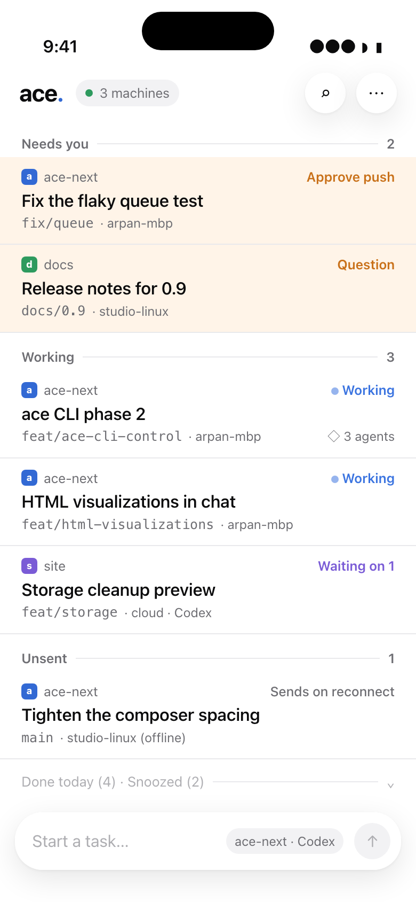
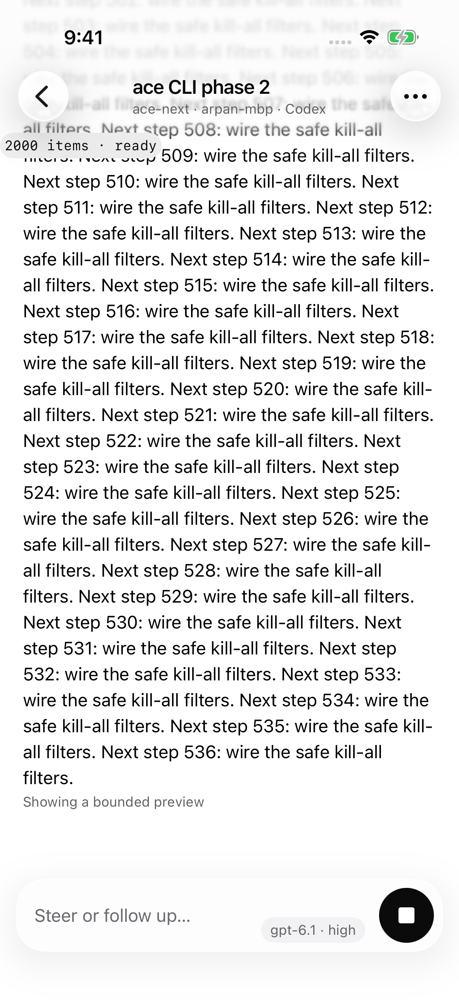
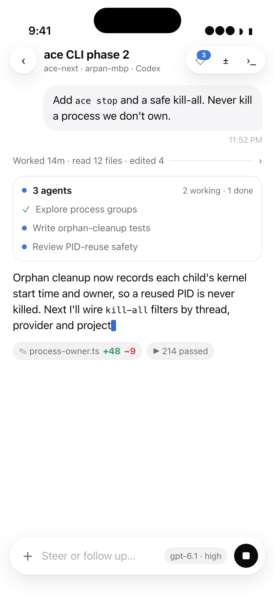
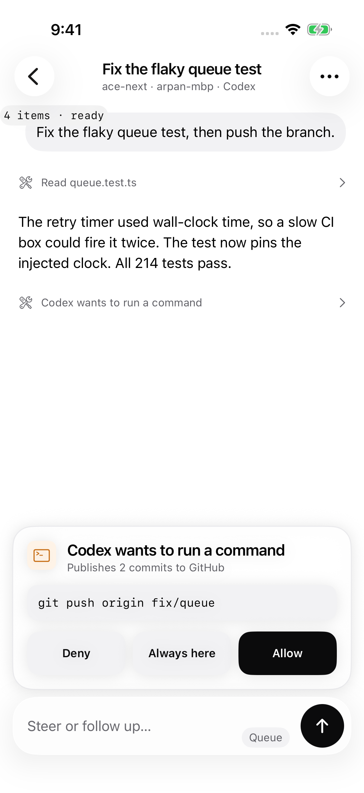
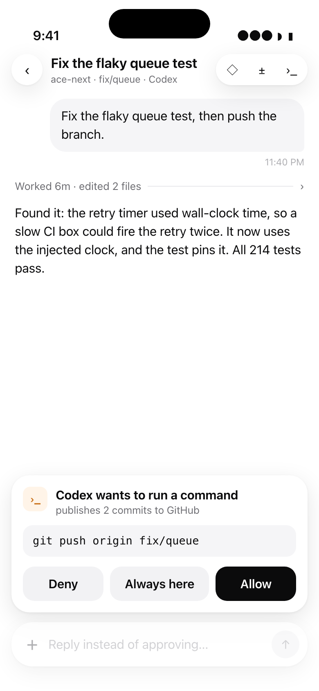

One inbox, grouped by canonical daemon state. The stress fixture has one approval and two working trees. Quick-start and the complete machine grouping remain MVP work.


The native screenshot is the 2,000-item stress conversation at its streaming tail. The reference uses a short turn. The floating composer uses native Liquid Glass; the debug counter belongs to the spike.


The card stays above the composer. Deny, Always here and Allow use the daemon's offered options. The SDK owns durable dispatch and first-answer-wins resolution.

